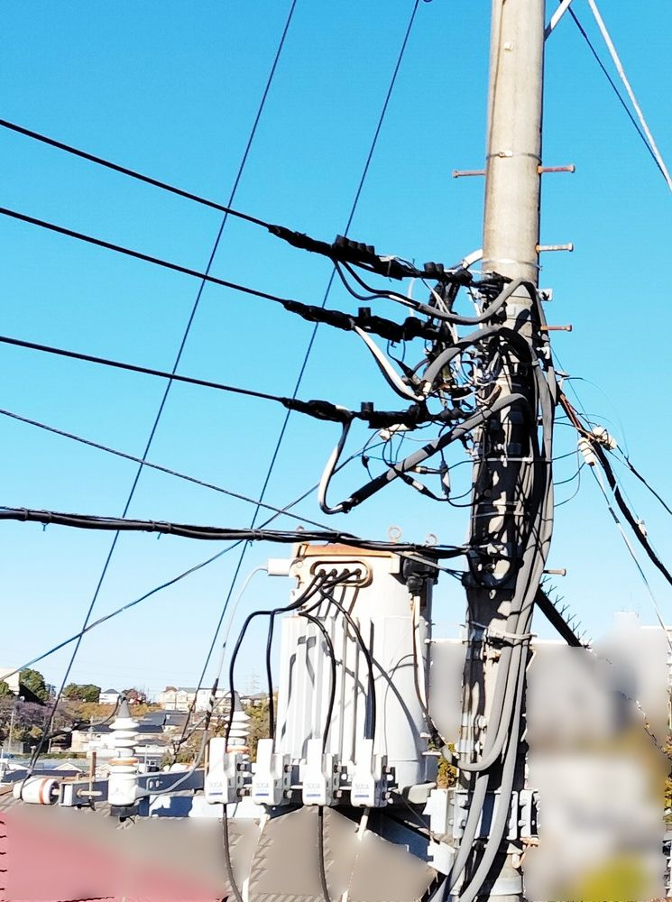
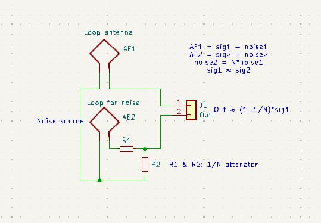
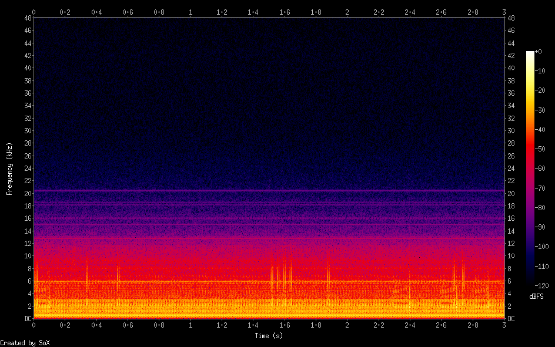
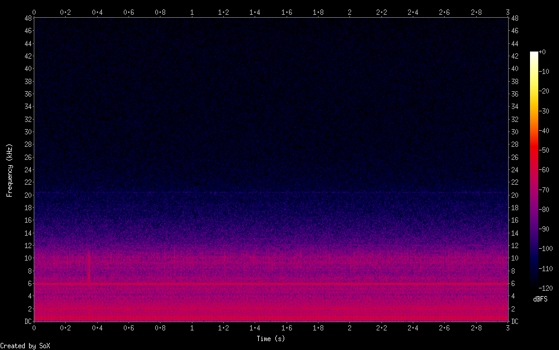

ノイズアンテナによるノイズ低減
ELF/VLF ノイズ源
私が室内で観察できる200Hz-12kHz帯のノイズのうち最大のものは2kHz以下の50Hz商用電源の高調波で特に奇数時の高調波が強烈です
そのノイズ源を探してみるとどうやらすぐ近くにある柱上変圧器つきの電柱のようです 
ノイズの発生自体は別の場所でそれが伝わってここから発生しているように見えているのかもしれません
この電柱に一番近いところにノイズを拾うためのループアンテナを置き、得られたノイズ信号をアッテネータで磁気ピックアップでのノイズレベルにまで落とし逆位相で合成することでノイズのキャンセルを試みました
アッテネータで1/N にした場合、遠方からの信号は 1-1/N に減少しますがノイズの方は大きく低減できるはずという原理です

もちろんノイズ部分は完全に N 倍というわけではないのでそんなにうまくはいかないのですが単純な仕掛けである程度の効果を狙います
ノイズキャンセルなしだとこんな感じだったのですが 
ノイズキャンセル後はスペクトログラムがかなり静かになります 